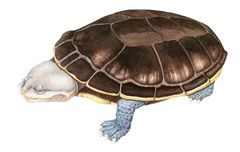
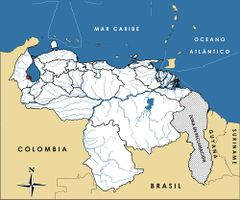

Mesoclemmys zuliae
| Cabezón del Zulia | |
|---|---|
|  | |
| Riesgo de extinción | |
 Vulnerable (UICN) | |
| Clasificación científica | |
| Reino: | Animalia |
| Filo: | Chordata |
| Clase: | Reptilia |
| Orden: | Testudines |
| Familia: | Chelidae |
| Género: | Mesoclemmys |
| Especie: | Mesoclemmys zuliae |
| Nombre binomial | |
|
Mesoclemmys zuliae Pritchard et Trebbau, 1984 | |
| Distribución | |
|
 Mapa de distribución de Mesoclemmys zuliae | |
Contenido
Información de Evaluación
- Categoría y Criterio Regional: Vulnerable A2acd
- Fecha de Evaluación Regional: 2015
- Evaluadores: Jesús Morales-Campos y Ariany García-Rawlins
- Categoría y Criterio Global: Vulnerable B1+2c
Justificación
Evaluaciones Previas
1999: Preocupación Menor (LC)
2008: Vulnerable (VU)
Información General
Nombres comunes
Cabezón del Zulia, tortuga cabezona del Zulia, tortuga cabeza de sapo del Zulia, Zulia toad-headed turtle, Zulia toad-headed sideneck.
Notas taxonómicas
Sinónimos
Phrynops zuliae
Descripción
Tortuga dulceacuícola de talla mediana. Posee un dimorfismo sexual marcado, siendo los machos de menor tamaño que las hembras, pues ellos miden entre 19 y 21 cm mientras que las hembras alcanzan de 25 a 28 cm de longitud. Es fácilmente distinguible por su gran cabeza de hasta 10 cm de ancho, y por su peculiar modo de plegarla hacia un lado del cuerpo en lugar de retraerla hacia el interior del caparazón (Pritchard y Trebbau 1984). Dorsalmente muestra una coloración grisácea; la garganta y el pecho son blanquecinos y exhiben una barra negra que se extiende desde la nariz y a través del ojo hasta terminar sobre el tímpano (McCord et al. 2001).
Distribución
Es una especie endémica de la cuenca del lago de Maracaibo que forma parte de los numerosos endemismos de reptiles de agua dulce de la región, posiblemente resultantes de su aislamiento de otros ambientes dulceacuícolas al estar rodeada por la sierra de Perijá, cordillera de los Andes, zonas áridas de Falcón y Zulia y el mar Caribe. Es probable que su distribución se restrinja a la región suroccidental, específicamente a los ambientes pantanosos de las ciénagas de Juan Manuel de Aguas Blancas y Aguas Negras (Pritchard y Trebbau 1984). De hábitos acuáticos, prefiere ambientes de sabanas anegadizas, madreviejas, pequeños caños y cuerpos de aguas estacionales. Fue descrita originalmente como Phrynops zuliae, y luego el subgénero Batrachemys se elevó a género. Recientemente se reasignaron las especies de Batrachemys a Messoclemmys, aunque todavía se requieren evaluaciones genéticas para aclarar el género apropiado para esta especie (Pritchard y Trebbau 1984, McCord et al. 2001, Bour y Zaher 2005).
- Sistema: Terrestre, Dulceacuícola
- Bioregión:
- Intervalo altitudinal (m): Temporalmente sin información
- Endémica: Sí
Situación
Es una especie de distribución extremadamente restringida y de hábitos ecológicos especializados. Solo es conocida en una pequeña área caracterizada por la presencia de un hábitat único, aislado y distinto de todos los ambientes que le rodean (Rodríguez, J. P. y Rojas-Suárez 2003). Los habitantes de la región casi no la conocen y además comentan que sus poblaciones han decrecido e incluso han desaparecido de algunas localidades. Su estatus poblacional no ha sido evaluado formalmente por estudios de campo y se sabe muy poco sobre su biología y ecología (Pritchard y Trebbau 1984). En el ámbito nacional originalmente fue clasificada como Vulnerable, pero referida con el nombre de Phrynops zuliae (Rodríguez, J. P. y Rojas-Suárez 2003).
- EOO (km2): Temporalmente sin información
- AOO (km2): Temporalmente sin información
- Tendencia Poblacional: Desconocida
Amenazas
Tradicionalmente no ha sido una especie apreciada como alimento por los pobladores de la región, debido a su aspecto y olor desagradables. Sin embargo, la consumen algunos inmigrantes colombianos asentados en el sur del lago de Maracaibo (Pritchard y Trebbau 1984). El reciente y creciente establecimiento de desplazados de Colombia en localidades ubicadas dentro del ámbito de distribución de Messoclemmys zuliae, constituye una amenaza sobre sus poblaciones, en vista de que de modo consecuente se viene arraigando una tradición gastronómica foránea que genera una mayor presión de caza. La pérdida de hábitat como resultado del desarrollo agrícola, pecuario, piscícola y minero también es una amenaza importante. Un factor de riesgo potencial es la contaminación generalizada del lago de Maracaibo (Rodríguez, J. P. y Rojas-Suárez 2003). Su hábitat, en específico los bosques húmedos del Catatumbo, se consideran En Peligro Crítico (Llamozas et al. 2003). Su distribución geográfica tan reducida suma agravantes a su situación, que podrían resultar en su desaparición de no tomarse las medidas pertinentes.
Conservación
Ninguna medida de preservación ha sido dirigida a M. zuliae y la legislación ambiental venezolana no la protege directamente. Parte de su ámbito de distribución se encuentra amparado legalmente por las figuras protectoras de tres áreas bajo régimen de administración especial (Abrae): parque nacional Ciénagas de Catatumbo (269.000 ha), reserva hidráulica Zona Sur del Lago de Maracaibo (618.000 ha) y reserva de fauna silvestre Ciénagas de Juan Manuel de Aguas Blancas y Aguas Negras (71.500 ha) (F. J. M. Rojas-Runjaic obs. pers.). No obstante la función protectora de estas zonas, no se ha logrado la efectividad requerida. Considerando que la especie representa una fuente de proteínas adicional en la dieta de los pobladores de la región sur del lago de Maracaibo, se hace urgente el desarrollo de estudios sobre su biología, ecología, filogenia y estatus poblacional, así como el establecimiento de programas de conservación.
Autorías
Autores originales
Fernando J. M. Rojas-Runjaic, Gilson A. Rivas, William P. McCord y César Molina (†)
Colaboradores
Ilustrador
Amelie Areco
Referencias
- Bour, R. y Zaher, H. (2005). A new species of Mesoclemmys, from the open formations of Northeastern Brazil (Chelonii, Chelidae). Papéis avulsos de Zoologia 45(24): 295-311.
- Llamozas, S., Duno de Stefano, R., Meier, W., Riina, R., Stauffer, F., Aymard, G., Huber, O. y Ortiz, R. (2003). Libro Rojo de la Flora Venezolana. Provita:, Fundación Polar, Fundación Instituto Botánica de Venezuela Dr. Tobias Lasser. Caracas, Venezuela. 555 pp.
- McCord, W. P., Joseph-Ouni, M. y Lamar, W. W. (2001). A taxonomic reevaluation of Phrynops (Testudines: Chelidae) with the description of two new genera and a new species of Batrachemys. Revista Biología Tropical 49(2): 715-764.
- Pritchard, P. C. H. y Trebbau, P. (1984). The Turtles of Venezuela. Contributions to Herpetology, Number 2. Society for the Study of Amphibians and Reptiles. Ann Arbor, Michigan. 468 pp.
- Rodríguez, J. P. y Rojas-Suárez, F. (1999). Libro Rojo de la Fauna Venezolana, segunda edición. PROVITA, Fundación Polar. Caracas. 444 pp.
- Rodríguez, J. P. y Rojas-Suárez, F. (Eds.) (2008). Libro Rojo de la Fauna Venezolana, tercera edición. Provita y Shell Venezuela, S. A. Caracas, Venezuela. 364 pp.
- Rojas-Runjaic, F. J. M., Rivas, G. A., McCord, W. P. y Molina, C. (2015). Cabezón del Zulia, Mesoclemmys zuliae. En: J.P. Rodríguez, A. García-Rawlins y F. Rojas-Suárez (eds.) Libro Rojo de la Fauna Venezolana. Cuarta edición. Provita y Fundación Empresas Polar, Caracas, Venezuela. Recuperado de: animalesamenazados.provita.org.ve/content/cabezon-del-zulia Jue, 12/04/2018 - 12:45